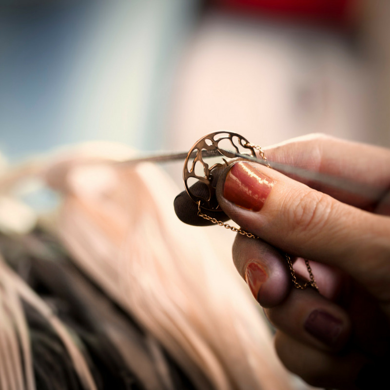
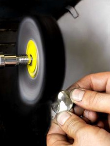
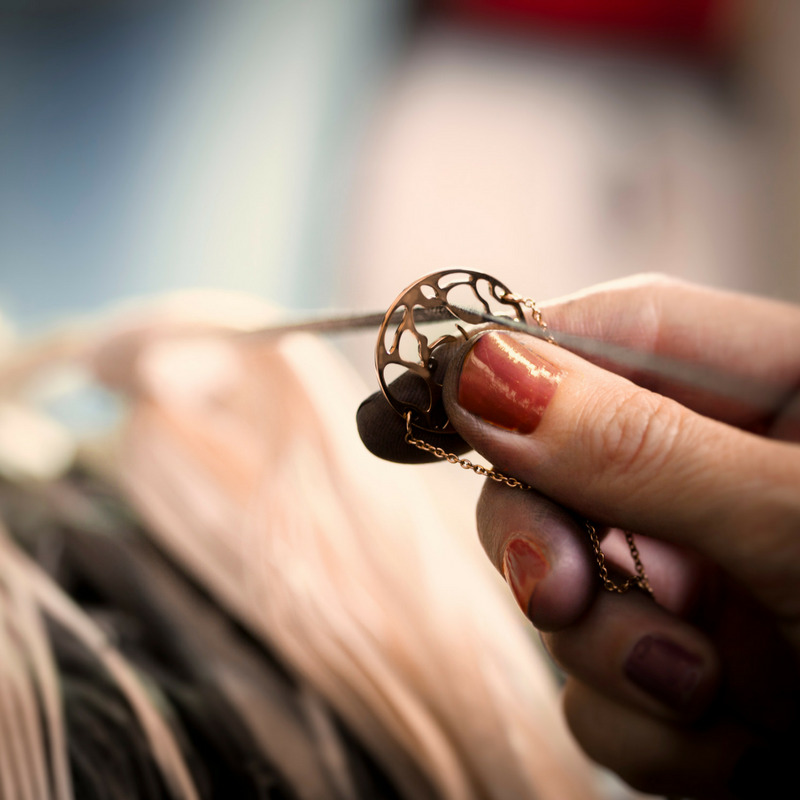
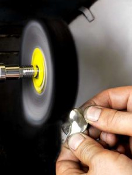

Présentation
Depuis 1975, Poli Bijoux incarne l’excellence du polissage en haute joaillerie. Artisan passionnée, j’ai consacré ma vie à ce métier d’exception, en révélant la beauté et l’âme de chaque bijou passé entre mes mains.
J’ai eu l’honneur de collaborer avec les plus grandes maisons de joaillerie, en apportant à chaque pièce ma rigueur, mon exigence, et un savoir-faire reconnu pour sa finesse et sa sensibilité.
Mon intervention couvre toutes les étapes de création : prototypes, validations clients, pré-sertissure, petites séries et pièces uniques, avec toujours le même soin du détail et le respect de l’identité de chaque maison.
Mon approche est sur-mesure. Je m’adapte à l’ADN de chaque marque pour magnifier leurs créations, sans jamais trahir leur style. Car chaque bijou est unique, et mérite un traitement unique.
Pourquoi ce site ?
Ce site est né d’un désir profond : transmettre, partager, perpétuer.
Le métier de polisseuse est un métier de l’ombre, mais il mérite d’être reconnu et valorisé. À travers cet espace, je souhaite vous faire découvrir les coulisses de mon travail, mettre en lumière la beauté du geste artisanal, et ouvrir les portes d’un monde souvent méconnu mais essentiel à la joaillerie de prestige.
Ce que vous trouverez ici
- 💎 Une galerie de mes réalisations, pour découvrir concrètement les pièces sur lesquelles j’ai travaillé. Chaque bijou raconte une histoire.
- 🎓 Des formations, pour les professionnels et les passionnés souhaitant apprendre ou perfectionner l’art du polissage.
- 🛠️ Des audits qualité, pour les entreprises qui veulent améliorer ou garantir un haut niveau de finition et d’exigence.
Une vision du métier
Le polissage ne consiste pas simplement à « faire briller ». C’est un art de révélation : révéler les lignes, sublimer les volumes, équilibrer la lumière.
Chaque geste est précis, chaque pression est mesurée. Le polissage exige sensibilité, patience, maîtrise il est le lien final entre la matière brute et l’objet précieux.
C’est aussi un profond respect pour le travail de chaque artisan en amont : fondeur, sertisseur, designer. Je suis fière de faire partie de cette chaîne d’excellence.
Une invitation
Que vous soyez artisan, maison de joaillerie ou professionnel curieux de mon univers, je vous invite à explorer ce site, découvrir mon savoir-faire, et me contacter pour toute demande ou collaboration.
Poli Bijoux,
Votre experte en polissage et en esthétique du bijou.
« L'esthétique commence là où l’âme de l’artisan s’inscrit dans la matière. »
 


